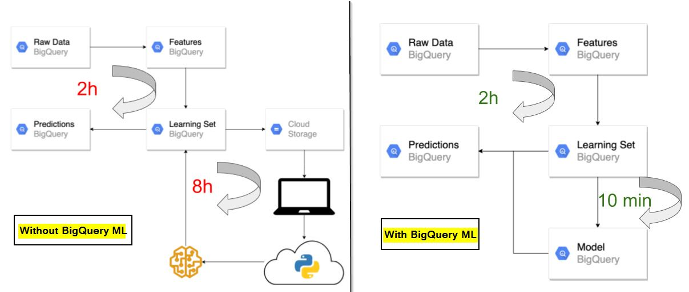
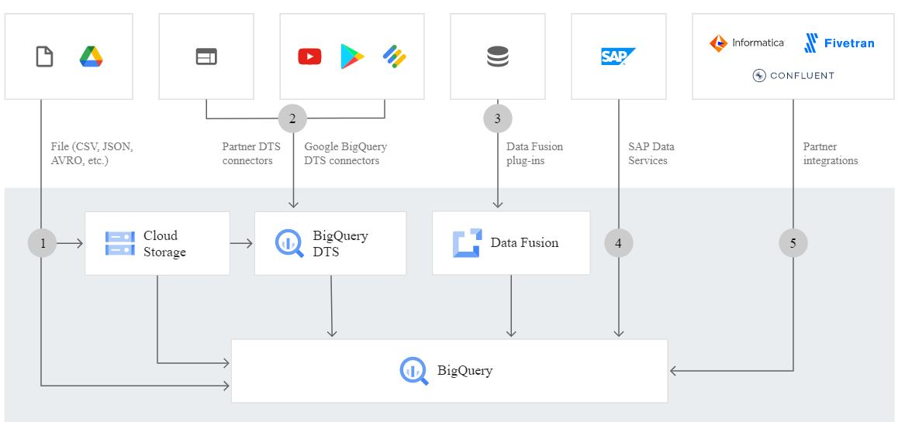

1. Google BigQuery là gì?
Google BigQuery là một kho dữ liệu không máy chủ (serverless) thuộc Google Cloud Platform (GCP), được thiết kế để xử lý và phân tích khối lượng dữ liệu lớn (petabyte-scale) với tốc độ cao. BigQuery sử dụng GoogleSQL để thực hiện các truy vấn phức tạp mà không cần quản lý cơ sở hạ tầng, tập trung vào phân tích để đưa ra quyết định kinh doanh.
- Ra mắt: Công bố tại Google I/O 2010, phát hành chính thức năm 2012.
- Công nghệ nền tảng: Dremel (truy vấn phân tán), Colossus (lưu trữ), Borg (điều phối).
- Mục đích sử dụng: Phân tích dữ liệu lớn, báo cáo kinh doanh, phân tích địa lý, Machine learning(BigQuery ML).
- Ngành ứng dụng: Bán lẻ, tài chính, y tế, truyền thông (ví dụ: Spotify, Twitter, The New York Times).
2. Các tính năng chính
Kiến trúc không máy chủ
Tách biệt lưu trữ và tính toán, tự động mở rộng, không cần cấu hình máy chủ.
Lưu trữ dạng cột
Tối ưu cho phân tích (OLAP), nén hiệu quả, hỗ trợ dữ liệu lồng (ARRAY, STRUCT).
GoogleSQL
Tuân thủ ANSI SQL 2011, hỗ trợ JOIN, hàm địa lý, và xử lý JSON.
BigQuery ML
Xây dựng mô hình máy học (hồi quy, phân loại, dự báo) trực tiếp trong BigQuery.
Kết nối nguồn dữ liệu
Hỗ trợ Cloud Storage, Bigtable, Sheets, Public Datasets, Google Trends.
Bảo mật và quản trị
IAM (Intelligent Autonomous Machines) chi tiết, mã hóa mặc định, tuân thủ GDPR, HIPAA, hỗ trợ INFORMATION_SCHEMA.
Tích hợp
Kết nối với Looker Studio, Tableau, Power BI, Python, Vertex AI, và các công cụ khác.
Tối ưu hiệu suất
BI Engine, Materialized Views, Partitioned/Clustered Tables tăng tốc truy vấn.
3. Lợi ích của BigQuery
- Hiệu suất vượt trội: Xử lý hàng tỷ dòng dữ liệu trong vài giây nhờ Dremel. 
- Dễ sử dụng: Không cần quản lý hạ tầng, giao diện thân thiện.
- Chi phí linh hoạt: Miễn phí 1TB truy vấn và 10GB lưu trữ/tháng.
- Tích hợp mạnh mẽ: Kết nối với Google Cloud, BI tools, và client libraries. 
- Khả năng mở rộng: Tự động mở rộng lưu trữ và tính toán, không giới hạn quy mô.
- Bảo mật cao cấp: Mã hóa mặc định, IAM chi tiết, tuân thủ các tiêu chuẩn.
4. Hạn chế của BigQuery
- Chi phí: Truy vấn full table scan hoặc INFORMATION_SCHEMA (tối thiểu 10MB) có thể tốn kém.
- Hạn chế đa vùng: Không truy vấn đồng thời dữ liệu từ nhiều khu vực địa lý.
- Thời gian thực: Continuous Queries (Preview) chưa ổn định, phù hợp hơn cho phân tích lịch sử.
- Phụ thuộc GoogleSQL: Một số tính năng yêu cầu GoogleSQL, không hỗ trợ Legacy SQL.
- Tích hợp bên ngoài: Cần cấu hình bổ sung cho Power BI, Tableau; dữ liệu lồng cần xử lý đặc biệt.
5. Chi phí BigQuery
-
Lưu trữ:
- Active: $0.02/GB/tháng (miễn phí 10GB/tháng).
- Long-term: $0.01/GB/tháng (không chỉnh sửa trong 90 ngày).
-
Truy vấn: $6.25/TB quét (miễn phí 1TB/tháng).
- On-demand (theo dung lượng truy vấn):
- $5/TB dữ liệu được đọc (không phải dung lượng lưu trữ).
- Truy vấn nhỏ thì rẻ, nhưng nếu query nhiều hoặc dữ liệu lớn sẽ tốn kém nhanh.
- Flat-rate (gói cố định)::
- Trả theo slot tính toán (phù hợp cho team lớn, query thường xuyên)..
- Ví dụ: $2,000/tháng cho 100 slot tính toán chuyên dụng
- Xuất dữ liệu từ BigQuery sang Cloud Storage: miễn phí.
- Xuất dữ liệu từ BigQuery sang Google Drive: $0.12/GB.
- Download ra ngoài (ví dụ tải về máy): tính phí egress.
- Capacity-based pricing: Mua slot cố định (100 slots trở lên).
- Ví dụ: 100 GB dữ liệu lưu trữ → $2/tháng Query đọc 2 TB dữ liệu mỗi tháng → $10/tháng. Tổng chi phí: khoảng $12/tháng (~300.000đ/tháng)
6. Tài liệu tham khảo
SO SÁNH MUA TRỰC TIẾP VÀ MUA THÔNG QUA NHÀ CUNG CẤP TRUNG GIAN
| Tiêu chí | Mua trực tiếp từ Google Cloud | Qua đối tác tại Việt Nam (Gimasys, Cloud Ace, v.v.) |
|---|---|---|
| Quyền kiểm soát | Toàn quyền quản lý và cấu hình | Có thể phụ thuộc một phần vào đơn vị triển khai |
| Thanh toán | Thẻ quốc tế (Visa/Mastercard) | Có thể thanh toán bằng VND, xuất hóa đơn tài chính |
| Chi phí triển khai ban đầu | Tự làm nên chi phí thấp (nếu có sẵn năng lực) | Tốn thêm phí tư vấn, cấu hình ban đầu |
| Chi phí vận hành | Tính trực tiếp theo tài nguyên sử dụng | Có thể phát sinh thêm phí quản lý, support |
| Hỗ trợ kỹ thuật | Miễn phí ở mức cơ bản; cần mua gói support | Có đội ngũ hỗ trợ kỹ thuật tiếng Việt theo gói dịch vụ đã thỏa thuận |
| Tư vấn và triển khai ban đầu | Tự học và triển khai | Được tư vấn, đào tạo, thiết kế kiến trúc dữ liệu, tối ưu hệ thống |
| Phù hợp với đối tượng | Công ty có IT nội bộ mạnh, thích tự chủ | Công ty vừa & nhỏ, hoặc muốn đi nhanh, cần người đồng hành |
| Khả năng tích hợp hệ thống | Phải tự tích hợp | Có kinh nghiệm tích hợp với SAP, ERP, CRM, v.v. |
| Thời gian triển khai | Tùy vào năng lực nội bộ | Nhanh hơn nhờ đội ngũ chuyên nghiệp hỗ trợ |
| Tiếp cận công nghệ mới | Có, qua tài liệu và công cụ Google | Có, thậm chí nhanh hơn nếu đối tác là Premier Partner của Google |
Danh sách công ty cung cấp dịch vụ BigQuery tại Việt Nam
| STT | Tên công ty | Vai trò/Chứng nhận | Dịch vụ chính liên quan BigQuery | Website/Nguồn | Chi phí |
|---|---|---|---|---|---|
| 1 | Nhà cung cấp chính | Cung cấp Google BigQuery trực tiếp | cloud.google.com/bigquery | Liên hệ để biết chi tiết | |
| 2 | Gimasys | Đối tác chính thức Google Cloud | Triển khai, tối ưu chi phí BigQuery, tư vấn BI | gcloudvn.com | Liên hệ để biết chi tiết |
| 3 | CMC Telecom | CMC Telecom mang trong mình tầm nhìn trở thành nhà cung cấp hạ tầng số hàng đầu khu vực, với sứ mệnh cung cấp cho khách hàng trong nước và quốc tế nền tảng hạ tầng số toàn diện - một CSP ( Comprehensive Service Provider) | Tư vấn + triển khai hạ tầng GCP (gồm cả BigQuery) | https://cmctelecom.vn// | Liên hệ để biết chi tiết |
| 4 | FPT Smart Cloud | BigQuery Ready (chứng nhận GCP) | Triển khai BigQuery, di trú dữ liệu, tối ưu truy vấn | https://fptsmartcloud.com/ | Liên hệ để biết chi tiết |
| 5 | Vinaweb (VinaGroup) | Đối tác chiến lược Google | Cung cấp GCP/BQ cho các tập đoàn lớn: Momo, Novaland, Heineken | vinagroup.com.vn | Liên hệ để biết chi tiết |
| 6 | GCS.vn | Đối tác GCP | Triển khai BigQuery kết hợp AI, Data Lakes | gcs.vn | Liên hệ để biết chi tiết |
| 7 | CloudAZ | Đối tác triển khai GCP | Giải pháp phân tích dữ liệu lớn với BigQuery | cloudaz.io | Liên hệ để biết chi tiết |